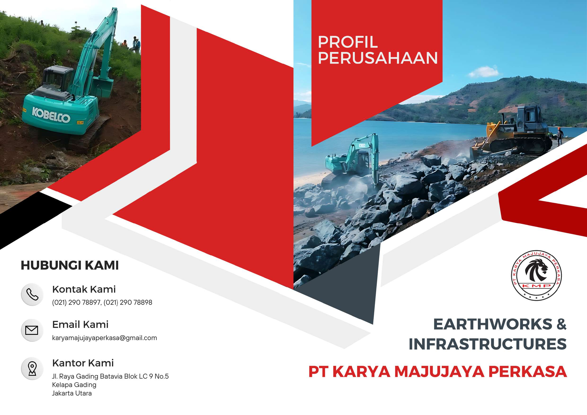
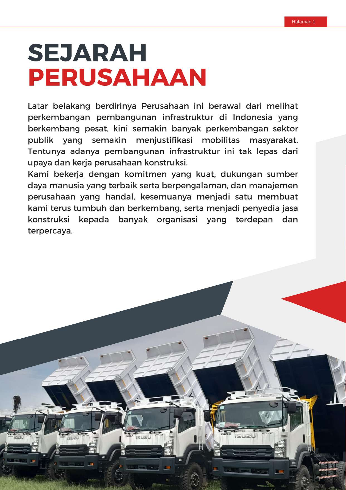
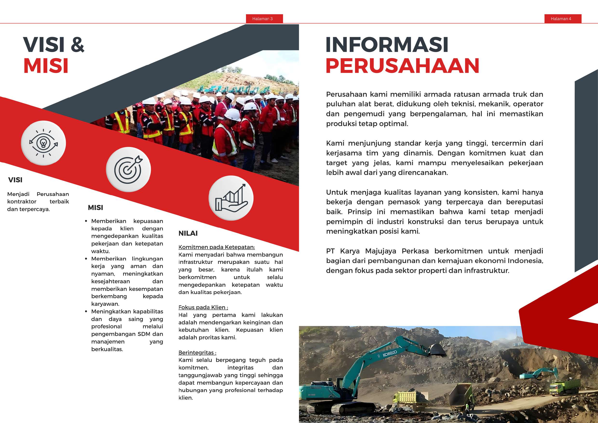
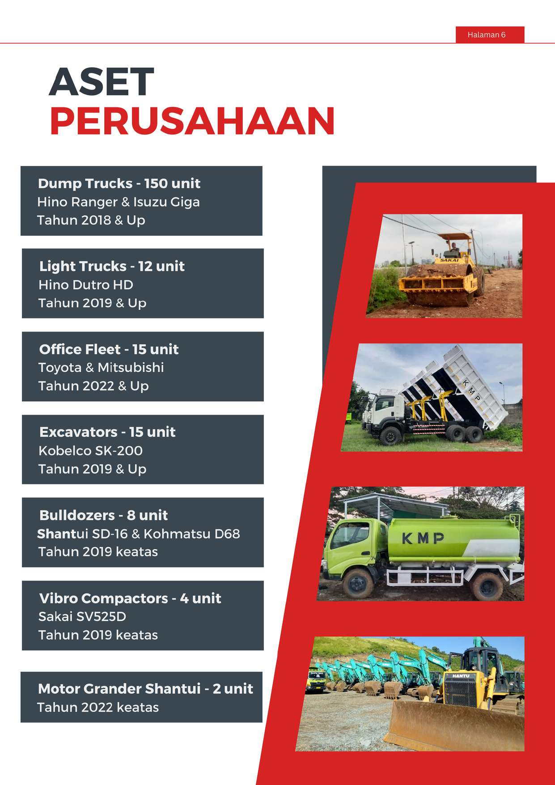
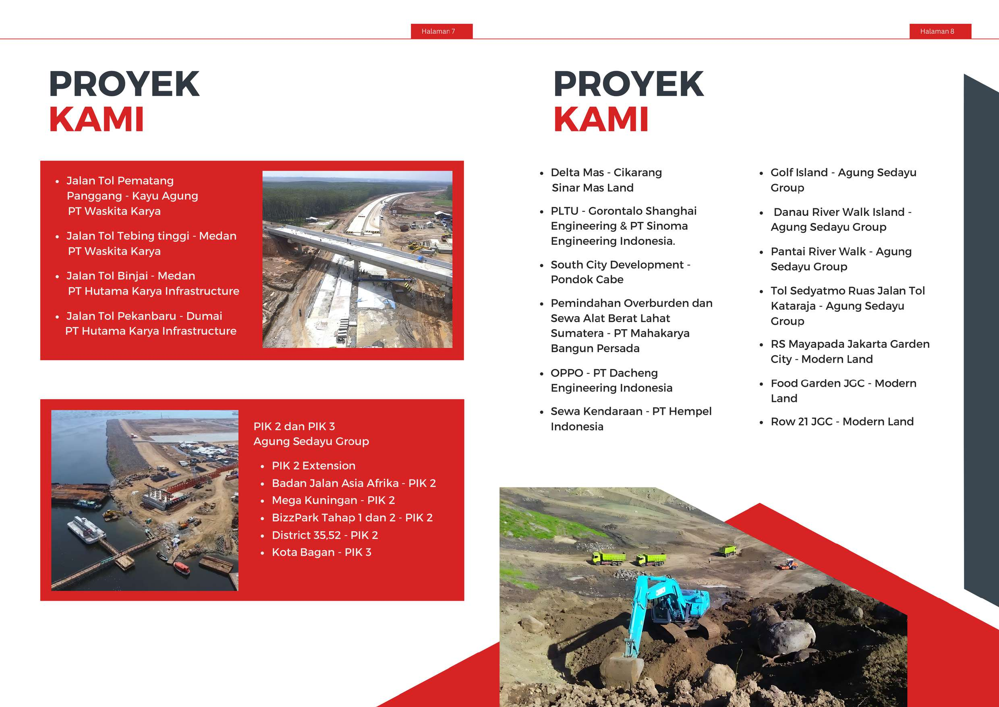

Penyedia jasa konstruksi terdepan dan terpercaya di Indonesia, berfokus pada sektor properti dan infrastruktur.
Latar belakang berdirinya Perusahaan ini berawal dari melihat perkembangan pembangunan infrastruktur di Indonesia yang berkembang pesat, kini semakin banyak perkembangan sektor publik yang semakin menjustifikasi mobilitas masyarakat. Tentunya adanya pembangunan infrastruktur ini tak lepas dari upaya dan kerja perusahaan konstruksi.
Kami bekerja dengan komitmen yang kuat, dukungan sumber daya manusia yang terbaik serta berpengalaman, dan manajemen perusahaan yang handal, kesemuanya menjadi satu membuat kami terus tumbuh dan berkembang, serta menjadi penyedia jasa konstruksi kepada banyak organisasi yang terdepan dan terpercaya.

Salam sejahtera,
Saya menyampaikan apresiasi kepada semua pihak yang telah mendukung dan mempercayai PT Karya Majujaya Perkasa. Kami percaya bahwa keberhasilan sebuah proyek dimulai dari pondasi yang kuat. Oleh karena itu kami selalu menanamkan integritas yang tinggi kepada semua personel karena dengan integritas itulah Perusahaan kami dapat menjunjung tinggi moral dan etika serta menyediakan jasa terbaik dengan standar professional.
Dengan tim yang profesional dan berpengalaman, serta dukungan teknologi terbaru, kami memastikan setiap proyek dikerjakan dengan standar tertinggi.
Kami selalu siap mendengarkan kebutuhan dan harapan Anda untuk menciptakan hasil yang memuaskan dan berkelanjutan.
Terima kasih atas kepercayaan dan dukungan yang telah Anda berikan kepada PT Karya Majujaya Perkasa. Kami berharap dapat terus bekerjasama dalam menghadirkan Solusi terbaik untuk kebutuhan anda.
Hormat kami,
Kiki Ciputra
CEO, PT Karya Majujaya Perkasa
Menjadi Perusahaan kontraktor terbaik dan terpercaya.
Komitmen pada Ketepatan:
Kami menyadari bahwa membangun infrastruktur merupakan suatu hal yang besar, karena itulah kami berkomitmen untuk selalu mengedepankan ketepatan waktu dan kualitas pekerjaan.
Fokus pada Klien:
Hal yang pertama kami lakukan adalah mendengarkan keinginan dan kebutuhan klien. Kepuasan klien adalah proritas kami.
Berintegritas:
Kami selalu berpegang teguh pada komitmen, integritas dan tanggungjawab yang tinggi sehingga dapat membangun kepercayaan dan hubungan yang profesional terhadap klien.

Perusahaan kami memiliki armada ratusan armada truk dan puluhan alat berat, didukung oleh teknisi, mekanik, operator dan pengemudi yang berpengalaman, hal ini memastikan produksi tetap optimal.
Kami menjunjung standar kerja yang tinggi, tercermin dari kerjasama tim yang dinamis. Dengan komitmen kuat dan target yang jelas, kami mampu menyelesaikan pekerjaan lebih awal dari yang direncanakan.
Untuk menjaga kualitas layanan yang konsisten, kami hanya bekerja dengan pemasok yang terpercaya dan bereputasi baik. Prinsip ini memastikan bahwa kami tetap menjadi pemimpin di industri konstruksi dan terus berupaya untuk meningkatkan posisi kami.
PT Karya Majujaya Perkasa berkomitmen untuk menjadi bagian dari pembangunan dan kemajuan ekonomi Indonesia, dengan fokus pada sektor properti dan infrastruktur.
Proses penggalian tanah dari satu area dan memindahkannya ke area lain untuk pengisian.
Proses pembersihan lahan untuk pembangunan atau konstruksi bangunan lainnya.
Proses meratakan atau membentuk permukaan tanah untuk membangun jalan atau konstruksi bangunan.
Proses penggalian untuk pembangunan ruang bawah tanah dari sebuah lahan atau bangunan.
Proses konstruksi sistem saluran pembuangan air.
Proses pembangunan, perbaikan, dan pemeliharaan jalan.
Proses pemindahan batubara ke area tertentu untuk dilakukan proses lebih lanjut.
Proses pemindahan material dari satu tempat ke tempat lain.
Penyewaan truk dan alat berat untuk proyek dan lainnya.
Hino Ranger & Isuzu Giga • Tahun 2018 & Up
Hino Dutro HD • Tahun 2019 & Up
Toyota & Mitsubishi • Tahun 2022 & Up
Kobelco SK-200 • Tahun 2019 & Up
Shantui SD-16 & Kohmatsu D68 • Tahun 2019 keatas
Sakai SV525D • Tahun 2019 keatas
Shantui • Tahun 2022 keatas


(021) 290 78897
(021) 290 78898
Jl. Raya Gading Batavia Blok LC 9 No.5
Kelapa Gading
Jakarta Utara